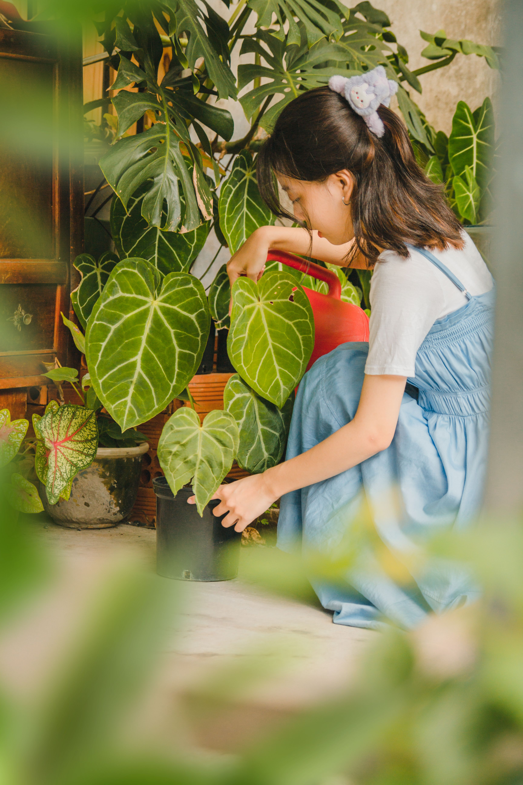

Welcome to My Website

PLANT
Plants are living organisms that belong to the Plantae kingdom and are found in various forms, including trees, shrubs, herbs, grasses, and flowering plants Vedantu Vedantu +1 . They grow in soil and require sunlight, water, and air to survive, producing their own food through photosynthesis, a process that converts sunlight into energy while releasing oxygen Vedantu Vedantu +1 . Plants are vital for humans and animals as they provide fruits, vegetables, grains, and medicinal compounds, as well as raw materials like wood, cotton, and paper aspirantsessay.com aspirantsessay.com +1 . Beyond their practical uses, plants enhance the environment by improving air quality
About Plants
Plants are living organisms that are essential for life on Earth, providing oxygen, food, and shelter while maintaining ecological balance.
